1. Introduction Générale
Bienvenue dans le manuel d'utilisation de TopoCalc, l'application mobile de référence dédiée aux professionnels de la topographie (bureau d'études, projeteurs, ingénieurs et techniciens géomètres). Ce manuel est conçu pour vous offrir une maîtrise totale, de bout en bout, des capacités de l'outil.
L'application est structurée pour mener à bien des missions d'implantation et de contrôle géométrique, allant de la conception stricte et validée du projet (Axe & Profil), à son exploitation terrain via des modules de calcul rigoureux.
Domaine d'usage
- Géométrie Linéaire : Saisie et calcul des axes en plan (Droites, Cercles, Clothoïdes de liaison ou raccordement).
- Altimétrie : Saisie de la ligne rouge (Profil en long, pentes, paraboles de raccordement).
- Topographie Opérationnelle : Relevés, implantations, rayonnement, calculs de surface, gisements et distances.
- Terrassement : Calcul itératif des entrées en terre (intersection Terrain Naturel / Talus Théorique).
Logique Globale de l'Application
L'application repose sur un principe séquentiel strict pour garantir l'intégrité des calculs.
L'utilisateur doit suivre ce schéma :
1. Créer ou Importer un Axe ➞ 2. Saisir/Valider l'Axe en
Plan ➞ 3. Saisir/Valider le Profil en Long ➞
4. Exploiter les Modules de Calculs (Topographie/Terrassement).
2. Prise en Main Initiale & Interface Générale
L'interface de TopoCalc, de type progressive web app, s'adapte aux environnements mobiles de chantier. Elle se compose de trois zones principales persistantes.
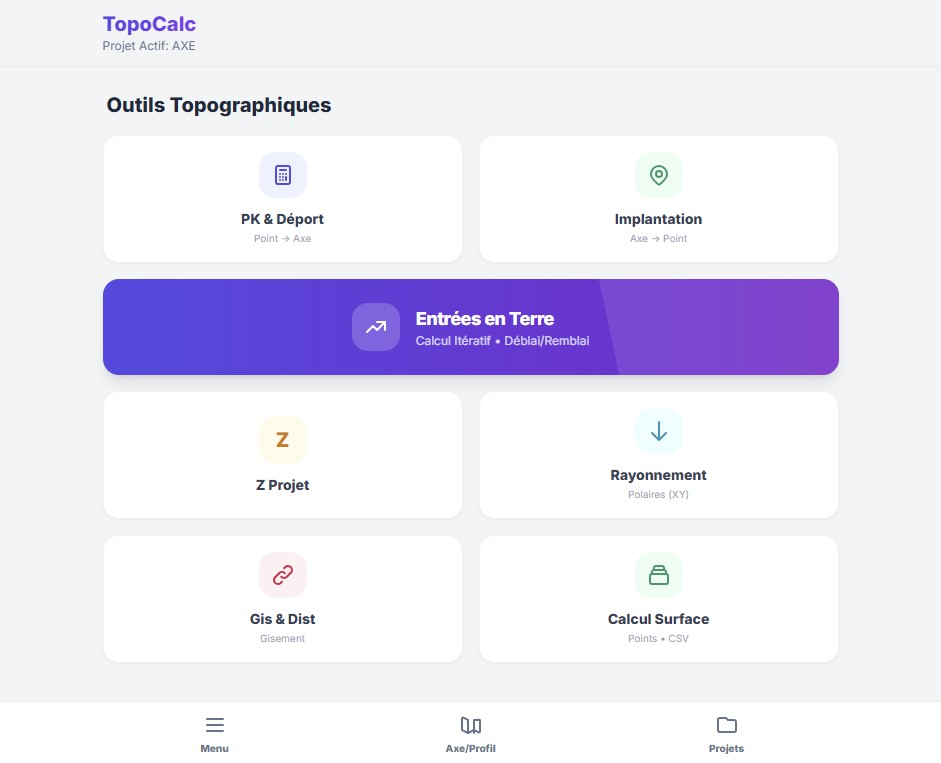
Vue du Menu Principal présentant la grille des modules.
Structure de l'Interface
| Zone | Description & Comportement |
|---|---|
| En-tête (Header) | Toujours visible en haut. Affiche le nom de l'application et, surtout, le projet actuellement actif (ex: Projet: RN12_Deviation). |
| Zone Principale | Affiche le contenu contextuel : Gestionnaire de projets, formulaire de saisie d'axe, ou interface de calcul spécifique. |
| Vignettes Flash | Des bandeaux colorés (rouge/vert) apparaissent brièvement sous l'en-tête pour notifier un succès d'enregistrement ou signaler une erreur bloquante. |
| Barre de Navigation Inférieure | Sert au basculement rapide. Contient 3 accès directs : Menu : Retour à la grille des outils. Axe/Profil : Accès direct à l'édition métrique du projet en cours. Projets : Accès au gestionnaire de fichiers. |
Dans tous les formulaires TopoCalc, les champs attendent des valeurs décimales avec point (et non virgule). Les angles s'expriment exclusivement en Grades (gon), et les distances en Mètres (m). L'application bloque le passage à l'étape suivante en cas de format invalide, en colorant le champ en rouge.
3. Gestion des Axes (Création / Import / Sauvegarde)
La section "Projets" est le gestionnaire de fichiers de l'application. Elle permet d'initialiser le modèle mathématique (Axe & Profil) qui sera ensuite exploité par les modules topographiques.
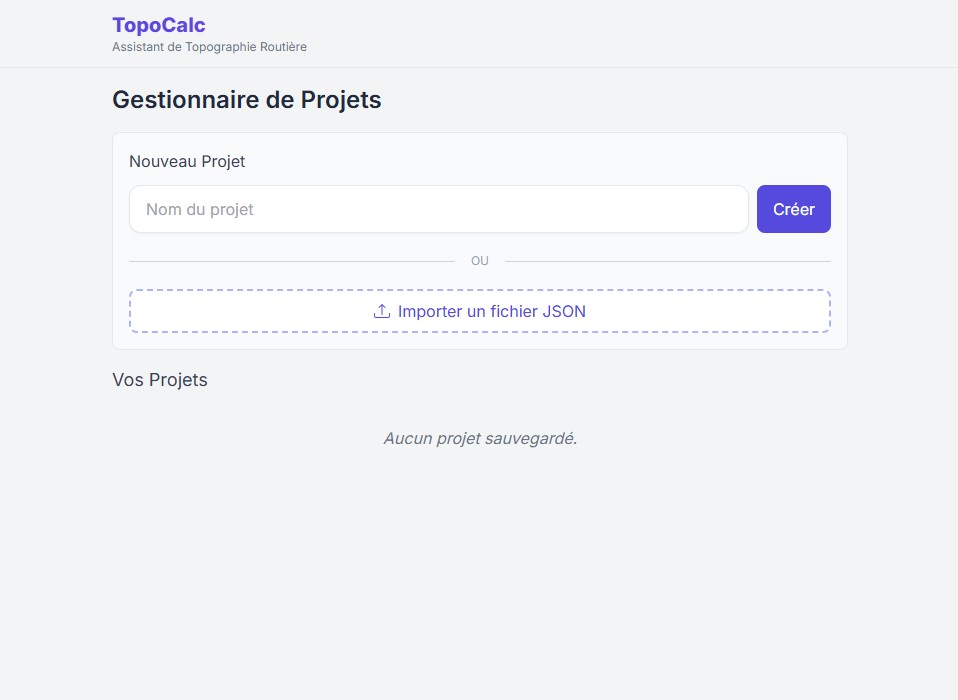
Vue du Gestionnaire de Projets.
3.1 Création d'un Nouvel Axe
Il s'agit de la première action que l'utilisateur doit effectuer pour commencer un chantier.
- Ouvrez le gestionnaire via le bouton Projets (Nav inférieure).
- Dans le champ "Nom du projet", saisissez un identifiant sans caractères spéciaux ni espaces complexes.
- Appuyez sur le bouton Créer.
- L'application bascule automatiquement ce projet comme "Projet Actif" (visible dans l'en-tête). L'axe et le profil de ce nouveau projet sont initialement strictement vides.
3.2 Import d'un Axe Existant
L'application permet d'importer une géométrie complète générée au bureau ou partagée par un collègue.
- Format Supporté : Fichier
.jsonspécifique TopoCalc gérant la succession d'éléments. - Procédure Exacte : Cliquez sur le bouton pointillé "Importer un fichier JSON". Votre explorateur de fichiers s'ouvrira pour sélectionner le fichier sur le stockage de l'appareil sécurisé (plugin de fichier système).
- Vigilance : Un import écrase en mémoire l'axe en cours s'il porte le même nom. Après un import, l'application recalcule dans l'ombre les éléments pour valider la continuité (tangences, jonctions). L'utilisateur doit vérifier l'onglet "Axe/Profil" pour confirmer sa conformité.
3.3 Enregistrement et Sauvegarde
L'application TopoCalc utilise une sauvegarde automatique dans le cache local de
l'appareil (LocalStorage) à chaque manipulation (ajout, suppression d'un élément
d'axe).
Toutefois, pour externaliser la donnée (Partage/Archivage), l'utilisateur doit formellement
Exporter le projet.
| Action | Résultat Opérationnel |
|---|---|
| Sauvegarde Active (Auto) | Conserve le projet instantanément. Résiste au redémarrage de l'application en gardant l'Axe intact en mémoire. |
| Bouton Exporter (Icône Téléchargement) | Génère un fichier .json réel via l'explorateur Android (Filesystem/Share),
plaçable dans les Documents ou envoyé par Email. Action vitale à la fin de la
modélisation à titre de sauvegarde froide. |
3.4 Suppression d'un Axe
La suppression s'effectue via l'icône de Corbeille associée au projet dans la liste. L'impact est immédiat et irréversible. L'application exige une confirmation via une boîte de dialogue d'Alerte. Si le projet supprimé était le projet actif, l'application vide la mémoire (L'en-tête affichera "Projet: Aucun"). Sans projet actif, les modules de calcul de PK/Déport ou Z produiront des erreurs.
4. Saisie de l'Axe en Plan (Alignement Horizontal)
C'est le cœur géométrique du logiciel. L'axe en plan s'effectue via l'onglet Axe en Plan du menu principal Axe/Profil.
L'Axe en plan est composé de tronçons appelés "Éléments". Il est obligatoire de respecter la chaîne de continuité. En dehors de l'élément nº1 (Point Base), chaque nouvel élément s'articule obligatoirement sur la fin géométrique (Coordonnées et Gisement tangent) de l'élément précédent.
Vue de la section Axe en Plan.
Logique et Ordre de Saisie Recommandé
- Identifier dans les plans BAEL/Dossier d'Exécution routière le PK de début et les coordonnées initiales XY.
- Saisir ces coordonnées fondamentales dans le bloc Point Statique / Coordonnées Modèle.
- Sélectionner un type d'élément géométrique dans la liste déroulante (Ligne, Arc, Clothoïde...).
- Renseigner les paramètres intrinsèques de cet élément (Longueurs, Rayons...). Le PK de départ de l'élément actuel sera automatiquement géré et déduit par TopoCalc.
- Valider l'élément (bouton Ajouter Élément).
- Répéter la sélection du type d'élément pour le tronçon suivant.
Pour l'Elément n°1, le Gisement Tangente Initial doit être saisi manuellement !
Pour l'Elément
n°2, 3, 4..., l'application verrouille et occulte la saisie du Gisement Tangente de Départ, car
elle impose la loi de continuité géométrique pure du tracé précédent.
Détail des Éléments Géométriques Disponibles
L'application TopoCalc propose une très grande richesse d'éléments. Voici les paramètres exacts attendus par l'application pour chaque type, ainsi que la convention des signes implémentée :
| Type d'Élément | Définition Métier | Paramètres d'Entrée Obligatoires | Signes & Précisions |
|---|---|---|---|
| LIGNE | Alignement Droit. | - Longueur (m) - Gis. Départ (Uniquement si Élément 1) |
La longueur est toujours absolue (positive). |
| ARC | Arc Circulaire. Courbure pure. | - Rayon (m) - Longueur développée (m) |
Rayon Positif (+) : Courbe à Droite. Rayon Négatif (-) : Courbe à Gauche. |
| CLOTHO - D>C | Clothoïde standard de transition (Droite vers Cercle). | - Paramètre A - Longueur développée (m) - Rayon d'arrivée (Optionnel, lié à A et L) |
Paramètre A Positif (+) : Tourne à Droite. Paramètre A Négatif (-) : Tourne à Gauche. L'application gère la formule intrinsèque R = A² / L. |
| CLOTHO INVERSE | Clothoïde de sortie de transition (Cercle vers Droite). Rayon de départ fixe, rayon de fin infini. | - X, Y : Point de Fin Tangente (Intersection alignement) - Paramètre A1 - Rayon R1 (Départ) |
L'application va itérativement déduire la géométrie pour projeter du cercle jusqu'à la tangente ciblée via le point spécifié. Le sens dépend du signe de A1/R1. |
| LIAISON S (OVE) | Raccordement complexe dit de "Sommet" reliant deux éléments par un faisceau de 2 Clothoïdes jointes (Point d'Inflexion ou changement de concavité). | - X, Y de l'Intersection (IP) - Paramètre A1, R1 (Branche entrante) - Paramètre A2, R2 (Branche sortante) |
Module de haute ingénierie. TopoCalc identifie le raccordement en "S" ou en "Ove" en fonction des combinaisons de signes (+ - ou + +) fournies pour les paramètres R1/R2. |
Au moment de l'encart d'un élément, l'application exécute son moteur mathématique. Elle restitue et enregistre dans son instance locale : le PK de fin, le X/Y absolu de fin, et le Gisement asymptotique de sortie de l'élément. Vous pouvez consulter les coordonnées calculées de chaque tronçon en développant la liste en-dessous du formulaire.
5. Saisie du Profil en Long (Alignement Vertical)
La dénivellation de votre tracé est gérée par l'onglet Profil en Long. Cette modélisation s'effectue en parallèle de l'Axe En Plan. Les relations horizontales / verticales se superposent via l'Appellation Commune de chaînage (PK).
Vue de la section Profil en Long et liste de ses éléments.
Le principe du Profil en Long et Point Zéro
Comme pour le plan, le profil doit commencer par un élément fondateur : le PK de départ altimétrique et sa Cote Projet Z absolue (m). C'est l'étage de base.
Types de segments verticaux
| Type Vertical | Paramètres à renseigner | Interprétation de TopoCalc |
|---|---|---|
| Ligne (Pente constante) | - Pente - Longueur de l'élément (m) |
Pente en Notation Décimale ! Pour 3% de pente montante, saisir 0.03.Pour 2.5% de pente descendante, saisir -0.025.
|
| Raccordement Parabolique | - Rayon Vertical (Rv) - Longueur sur l'horizontale (m) |
Concerne les angles rentrants ou saillants. Rv Positif (+) : Concavité orientée vers le haut (Point bas, cuvette). Rv Négatif (-) : Concavité orientée vers le bas (Point haut, crête). |
Contrairement au plan qui exige une tangence absolue, l'utilisateur a l'interface "Édition (Stylo)" dans la liste pour forcer occasionnellement un élément. Cela rompra explicitement la chaîne de continuité du Profil et créera des sauts, que le contrôle de continuité devra vérifier et potentiellement corriger (via interpolation).
6. Fixation, Aperçu & Contrôle de Continuité
Cette étape transitoire est la cléf de voûte de la sécurité opérationnelle de TopoCalc. Un axe mal entré produit des calculs d'implantation aberrants.
6.1 L'Aperçu Graphique (Preview)
Une fois les éléments renseignés, les boutons "Aperçu" (Plan) et "Aperçu
Profil" permettent une validation visuelle extrêmement rapide sur Canvas.
Que doit repérer l'utilisateur ? Les rebroussements. Un changement brutal de
direction entre deux points, ou une "trompette" (spirale qui boucle), trahissent toujours une erreur
de signe (+ au lieu de -) dans le rayon ou le paramètre A d'une clothoïde.
6.2 La Fixation et l'Édition (Mode Matrice)
TopoCalc permet de modifier un élément (Icône Stylo). La règle métier impose :
"Une erreur millimétrique sur un départ induit un glissement centimétrique à l'arrivée (effet
Bras de levier)".
La fonction d'édition affiche une option Fixer / Mode Matrice.
Lorsqu'il est utilisé, l'application gèle (fixe) volontairement le point de départ de cet élément
pour forcer une correspondance stricte avec le logiciel de conception routière lourd qui a généré
l'Axe. Les tronçons ne "flottent" plus librement au grès de la propagation d'erreurs en cascade.
6.3 Calcul et Contrôle de Continuité Globale
Ce bouton agit comme un validateur universel.
Ce que fait le contrôle :
- L'application balaye du PK 0 jusqu'à la Règle Fin.
- Elle réapplique scrupuleusement les tangences (le Gisement de fin d'élément N s'injecte en Gisement tangentiel de DÉPART de l'élément N+1).
- Elle écrase les X/Y/Z successifs calculés.
Si le contrôle rencontre un échec / une erreur d'interpolation :
Un avertissement clair indique qu'un lien S ou Inverse n'a pas pu converger mathématiquement vers
son asymptote.
L'utilisateur devra impérativement corriger ses paramètres R1, R2, A1, A2 qui définissent
la condition impossible de courbure dans les éléments affectés.
L'Axe est exploitable seulement lorsque la chaîne n'affiche plus d'exceptions mathématiques.
7. Passage à l'Utilisation Opérationnelle de l'Application
Une fois l'Axe validé, il s'agit dès lors de la "Vérité Terrain" dans TopoCalc.
Aucun module de projection (surface de chaussée, déblai) ne peut fonctionner si les onglets "Axe en
Plan" et "Profil en Long" n'abritent pas la donnée.
Vous pouvez dès lors rejoindre le
Menu (via la barre inférieure). La section suivante décrit les modules du tableau
de bord d’ingénierie qui vont interroger cet Axe.
8. Calcul de PK et Déport (Point connu en XY)
Objectif : Répondre à la question Topo de base : "Où se trouve géométriquement mon jalon actuel sur le terrain par rapport au plan théorique de l'Axe ?".
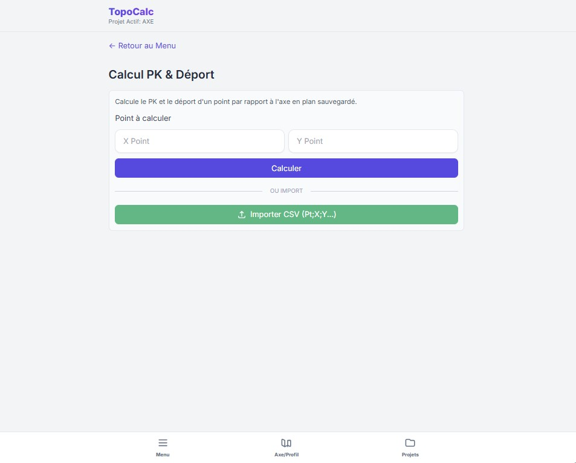
Vue du module PK & Déport.
Données d'Entrée :
- Les coordonnées effectives du récepteur GPS / Station (X , Y) en notation décimale métrique.
Exécution par l’application (Projections Itératives et Orthogonales) :
- Le moteur balaie chaque "locus géométrique" de l'Axe (droites, arcs, clothoïdes via intégration Simpson).
- Il trouve le point de l'axe où la perpendiculaire traverse votre coordonnée X,Y.
Résultats Affichés (Affichage direct) :
| Information | Définition Exacte |
|---|---|
| PK (Abscisse curviligne) | La distance développée depuis le début du projet jusqu'au point de projection sur l'axe. |
| Déport | La distance perpendiculaire, au millimètre près, qui sépare la canne GNSS de la fibre neutre de l'axe. |
| Convention de Signe du Déport | Positif (+) : Le point se trouve à DROITE du sens de
marche du PK. Négatif (-) : Le point se trouve à GAUCHE de l'axe de marche. |
Cas d'Erreur :
Si le point XY est situé bien avant le DÉBUT strict de l'axe ou
après sa FIN, l'application affichera un message d'extrapolation mathématique impraticable, en
rejetant la projection ("Projection Hors Emprise de l'Axe Validé").
9. Calcul de PK et Déport à partir d'un fichier CSV (Processus en Masse)
Ce module s'adresse aux opérateurs qui doivent projeter un levé de 200 à 2000 points d'un coup (ex: Validation du modèle de coffrage fini).
- L'application s'attend à un tableau séparé par le séparateur Point-Virgule
;ou la virgule standard. - Les trois premières colonnes obligatoires dans cet ordre sont :
Matricule(ID) ; Coordonnée_X ; Coordonnée_Y - Les colonnes supplémentaires (Z, Altitude, Code, Remarque...) sur les lignes seront conservées et ignorées lors du processus lourd.
Procédure par Étapes :
- Cliquer sur le bouton "Importer CSV" spécifique au menu "PK & Déport".
- Sélectionner un listing
levé.csv. - L'application lance une barre de traitement rapide.
- Injection et Restitution : Les résultats ne sont pas simplement affichés à
l'écran. L'application télécharge automatiquement un nouveau fichier enrichi
(nommé typiquement
resultat_pk_deport_XYZ.csv) dans vos Documents.
Le fichier Excel / CSV final restitué contiendra toutes vos données, plus deux colonnes
inédites apposées à la toute fin du tableau : le PK_calculé et le
DEPORT_calculé. La restitution reste pure, prête à s'insérer sur Covadis pour une
validation quantifiée.
10. Implantation (Calcul du XY d'un point sur axe via son PK et Déport)
Objectif : Vous avez un listing d'exécution bureau stipulant : "Recherche de piquet au PK 1450.00 avec un déport de +2.50m (Bordure droite)". Vous voulez le transformer en coordonnées réelles XY pour l'introduire dans le carnet station.
Données d'Entrée :
- Le PK métrique précis sur l'axe.
- Le Déport métrique souhaité (Taper
0pour un repère posé pile sur la ligne d'axe. Taper avec un signe négatif-pour s'éloigner côté gauche de la chaussée).
Comportement Conditionnel :
- Si PK hors emprise absolue : l'algorithme ne rend rien (le tracé mathématique ne peut justifier la tangente d'éléments non modelés).
Résultats produits : L'écran affichera la Coordonnée X et Coordonnée Y d'implantation. Ces valeurs se saisissent ensuite dans la Canne / Station Totale pour un piquetage immédiat.
(La méthode CSV de masse fonctionne symétriquement : Insérer Fichier avec
ID ; PK ; DEPORT ➞ Récupérer fichier avec les deux dernières colonnes
X_calculé ; Y_calculé créées).
11. Calcul de Z sur Profil à partir du PK (Z Projet Ligne Rouge)
Ce module sert à interroger instantanément la côte altimétrique définitive du corps de chaussée géométrique.
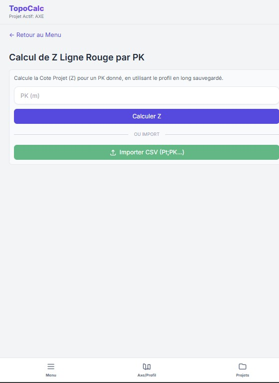
Vue du calcul Z sur Profil.
Prérequis Impératif : L'outil ne fonctionnera que si le Profil en Long a été renseigné convenablement dans le Projet. L'utilisateur doit s'assurer que le PK d'entrée est englobé par la longueur du profil défini.
Saisie : L'abscisse (PK) ciblée.
Données restituées (Calcul complet) :
- Z Projet (Cote Rouge Altitude) : Calculée à partir des paraboles et des droites constantes de déclivité.
- Type d’élément vertical impliqué : Information rassurant l’opérateur qu’il se situe dans une Pente Linéaire ou isolé dans un Raccordement en Cuvette.
- Pente Instantanée Locale (%) : Crucial. La pente tangentielle à cet exact PK. Si vous projetez sur une Ligne, cette valeur sera constante. Si vous êtes dans un raccordement complexe, elle sera spécifique et continuellement variable pour ce point, indispensable pour caler la grille d'un draineur.
12. Calcul de Rayonnement Simple
Module Topo de base décorrélé de l'Axe. Utile pour projeter rapidement l'implantation d'un angle de bâtiment, regard, ou puits en levé direct polaire.
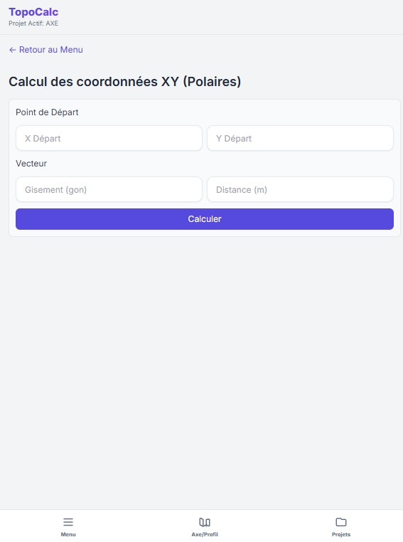
Vue du Rayonnement.
Données à introduire :
- Station Mère / Point de Départ : Coordonnées X_Dep et Y_Dep absolues stationnées.
- Mouvement Vecteur :
- Gisement visé (0.000 à 400.000 gon - Grades). Le Nord géographique strict.
- Distance horizontale (Dh métrique).
L'outil garantit : Une application pure Math-Trigo
(X + Dist*Sin(Gisement) ; Y + Dist*Cos(Gisement)). Le résultat fourni est une pair de
Coordonnées X_Cible, Y_Cible inamovibles.
L'erreur la plus vaste des non-habitués est l'usage du Degré Sexagésimal. Referez-vous impérativement aux Grades (Gon) et confirmez la compensation d’origine (V0) de votre tachéomètre !
13. Calcul de Gisement et Distance (V0 d'orientation / Dis-Horiz)
C'est l'inverse du rayonnement. Répond à la question : "Dans quelle direction et à quelle distance se trouve le Répère 2 par rapport au Repère 1 fixés ?".
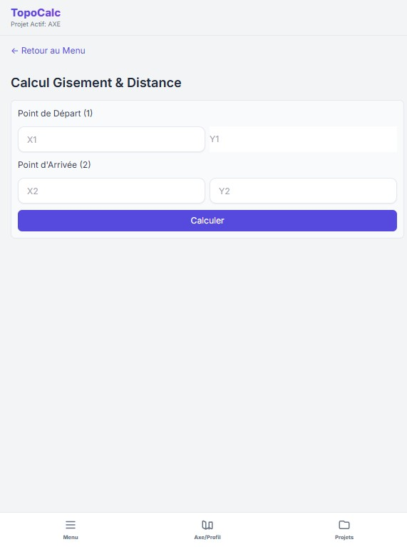
Vue du module Gisement Distance.
Saisie Stricte :
- X1, Y1 (Départ) et X2, Y2 (Arrivée Ciblée).
Résultats (L'algorithme analyse les quadrants en arrière-plan et gère l'ATAN2) :
- Forme Angulaire : Gisement Topographique propre, converti au système centésimal (Gon). Informe de la direction précise.
- Distance : Renvoie la distance horizontale algébrique entre les deux repères, qui doit correspondre en théorie terrain aux indications d'un ruban chaîné.
- Cas limites (Confondus) : Si X1,Y1 = X2,Y2, l'application ne produira pas d'erreur critique de plantage Javascript mais refusera un gisement "0 absolu irréel" ; la distance sera notifiée comme 0m. L'opérateur peut vérifier les bornes.
14. Calcul de Surface (Points et Polygones)
Une calculatrice graphique d'emprise intégrée, essentielle pour les attachés de travaux qui valident l'arase, un fond de fouille, un polygone d'expropriation, ou la surface d'un remblai appliqué.
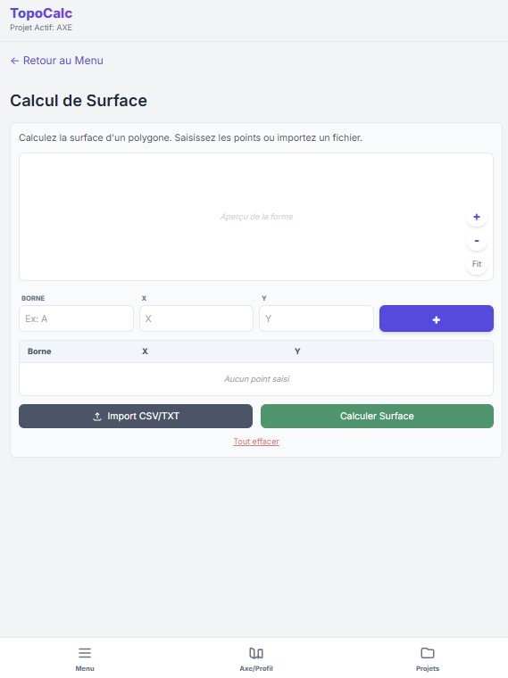
Vue du module Calcul de Surface et Canvas géométrique.
Le principe d'utilisation et ordre d'impact :
L'application calcule de manière vectorielle via la méthode universelle de Gauss (Aire d'un polygone irrégulier). Toute saisie de points doit former un contour fermé ! L'ordre d'insertion des bornes affecte directement le sens de boucle. Un périmètre dessiné "en étoile" ou croisé faussera lamentablement les Mètres-Carrés.
Méthodes de Saisie :
- Manuel avec Contrôle Canvas :
- Tapez un ID (ex: Borne 'A'), son X, son Y. Cliquez sur [+] Ajouter.
- La borne rejoint la liste sous-jacente. L'écran de visualisation du haut (le Canvas Interactive View) dessine le point et le relie via filet en temps réel.
- Vous remarquez visuellement le périmètre de la forme se déployer en mode polaire. Le système reboucle toujours la figure au premier point.
- Masse Import CSV/TXT : Idéal pour les fichiers générés depuis une série de
polygones mesurés. Appuyez sur le bouton gris Import CSV/TXT et la zone
d'édition intègre la liste instantanément (les points doivent y étre structurés de façon
adéquate
ID ; X ; Yen suivant la bordure de périmètre dans l'ordre chronologique).
Ajustement du Contour et Manipulation Graphique :
L'utilisateur se trompe de point ? Aucun problème. La liste en dessous garantit une
gestion granulaire :
Vous avez la possibilité d'utiliser les flèches haut/bas au sein des lignes de point pour
réordonner une borne et rectifier le croisement (les papillons) de contour visuel en
Canvas.
Vous pouvez supprimer un point ou appuyer sur Tout Effacer bas de
page.
Appuyez sur le bouton vert Calculer Surface. L'interface affiche une carte émeraude résumée comprenant La valeur en Mètre Carré (m²) absolue haute précision, et immédiatement convertie dans l'usuelle terminologie agricole/expropriation en Hectare (ha).
15. Calcul Itératif des Entrées en Terre (Intersection TN / Projet)
C'est l'outil technique ultime et le plus orienté métier pour modélisation terraforming du manuel. Un terrassier ou chef de section routière doit chercher au ruban, ou à la canne sur site, "à quel endroit précis de l'arête montagneuse, ma pelle sur chenille doit creuser son talus vers la route ?"
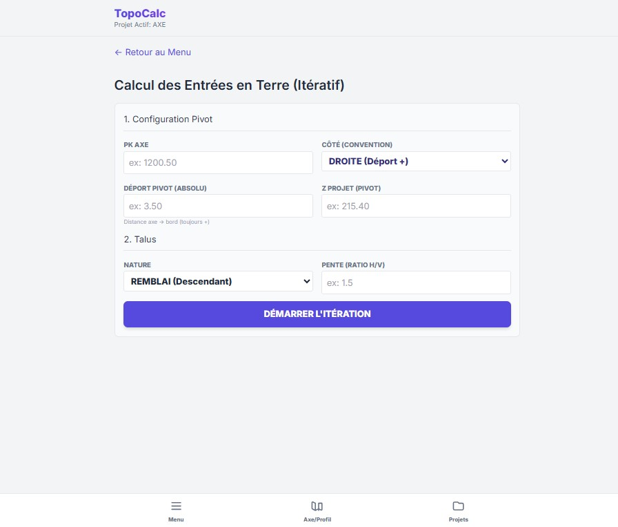
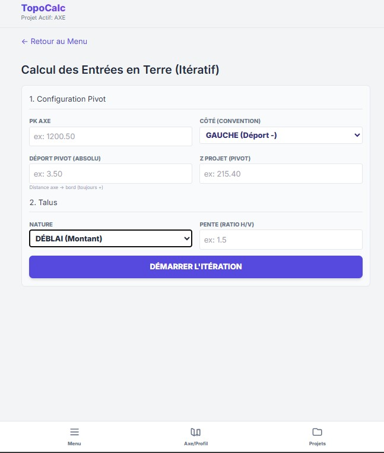
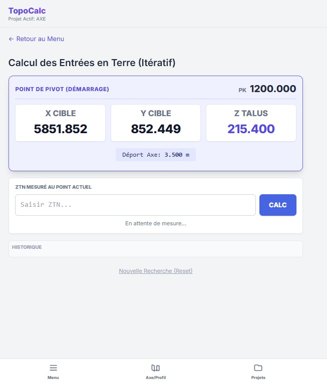
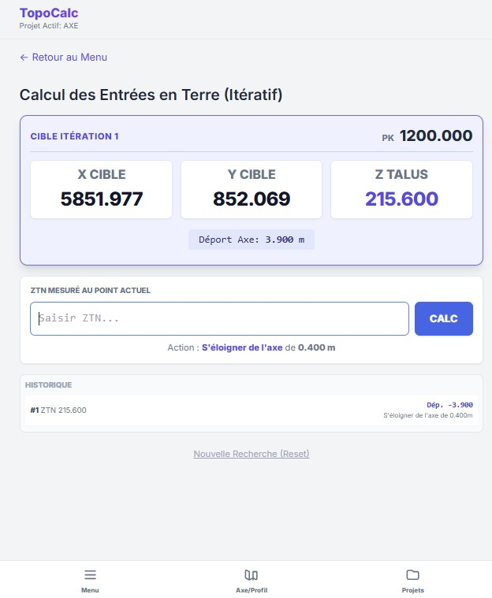
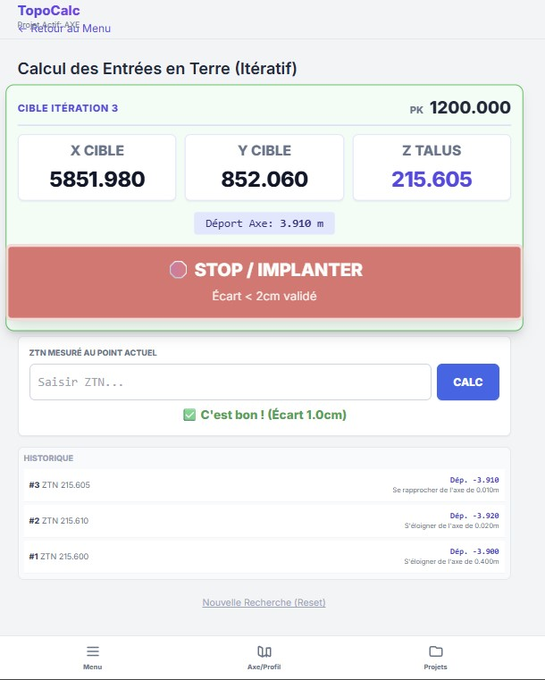
Vue de la section Entrées en Terre, le configurateur Pivot puis le cycle interactif.15.1 Objectif Fondamental
L'application va croiser continuellement deux modèles 3D : la théorie géométrique absolue (Axe en Plan + Profil + Talus rigide de 1/1 ou 3/2) et la dure réalité de terrain chaotique sans forme mathématique évidente (Z Terrain Naturel). Ce croisement nécessite un processus Itératif de convergence par sondages successifs.
15.2 Définition des Données de Base Attendues
Dans le formulaire de Configuration (Étape 1 et 2), l'opérateur "assure les bases" du profil travers qu'il veut générer. Les données initiales obligatoires sont :
- Le PK de l'Axe : À quelle section se place-t-on (chaînage).
- Le Côté d'action : Droite ou Gauche (modifie le signe intrinsèque de la progression positive/négative du déport).
- Le Déport Pivot Initial : La distance bord axe vers le Point de Départ Pivot (Bord de plate-forme, trottoir, banquette chaussée avant talutage). Attention: Cette distance s'exprime toujours en Absolu sans signe !
- Le Z Projet Pivot : Quelle est l'altitude officielle sur le projet à ce point 'Déport Pivot' mentionné.
- Nature de l'Ouvrage (Talus) : Un REMBLAI (descente vers le TN plus bas). Ou un DÉBLAI (fouille vers un TN qui domine la route).
- La Pente imposée : Ratio Horizontale/Verticale (ex : pour 3/2, insérer
1.5. Pour 1/1 insérer1.0).
15.3 Processus Opérateur et Réponse Itérative Pas-à-Pas
L'application TopoCalc bascule en mode exclusif Zone d'Apprentissage (Boucle d'itération).
- Une fois la configuration démarrée, TopoCalc propose une Cible Itération 0 théorisée (Un Déport initial, et les coordonnées de navigation au sol (X Cible, Y Cible). Vous disposez de la première zone estimée de l'entrée en terre.
- Action Topo : Marchez vers le (X,Y). Prenez une mesure de l'Altitude Terrain (ZTN) à cette position dans l'herbe ou sur la colline.
- Réaction : L'Application vous demandera ce Z Terrain (ZTN) Mesuré ! Saisissez ce chiffre et appuyez sur Appliquer ZTN & Itérer.
- Algorithme : L'application intercepte cet altitude, la compare au gabarit Pente vs Z-Pivot formulé. L'intelligence applicative va alors analyser l'écart de distance et statuer "Le talus s'écrase plus loin dans la colline" ou "le talus finit plus court".
- Convergence : Immédiatement, un bloc consigne apparait. L'application donne
l'ordre visuel coloré :
"Éloignez-vous de la Route !" avec une "Nouvelle Distance d'ajustement".
Ou "Rapprochez-vous de l'Axe !". TopoCalc vous donne le nouveau couple X,Y à aller sonder. - Répétez la ligne 2 et 3 tant que la distance d'écart proposée est large.
15.4 Le Critère de Convergence de Fin
Comment l'utilisateur sait-il que le travail est accompli ?
- L'ajustement qui était de "5 mètres, puis 1 mètre, puis 20 centimètres" va fondre sous les sondages d'algorithme.
- L'application surveille rigoureusement le
Delta de Déport < 2 cm. - Une fois cette micro tolérance (2 centimètres d'ajustement final) franchie, la boucle stoppe automatiquement !
- L'écran s'anime avec un message officiel de SUCCÈS : "Convergence Atteinte ! Voici le Point d'Entrée en Terre".
- Le topo enfonce le piquet en bois, marque "ET", l'emplacement 3D d'interface entre Projet et Terrains est définitivement matérialisé sans encombre au sol, évitant l'usage de grosses machines bureau sur la montagne.
Si la colline s'avère avoir une pente géographique identique à la pente du talus (ex: 3/2 sur un relief parallèle) l'Axe de croisement ne se produira tout simplement jamais ! Si après 10 sondages ou si la correction vous donne un "Éloignez-vous de 500m", n'insistez pas. Ce profil en travers est physiquement caduque. TopoCalc vous protège et ce talus ne peut rattraper mathématiquement le terrain sous l'assiette du Projet, il convient de modifier l'ingénierie (Murs de Soutènements) du point d'étude bureau.